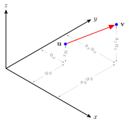
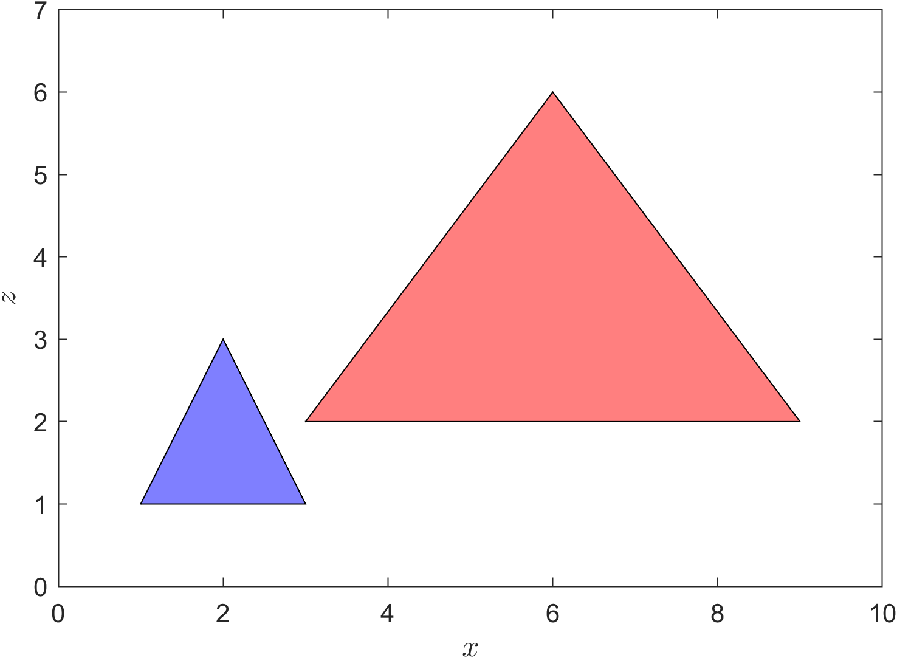
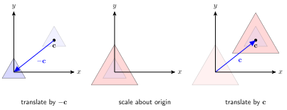
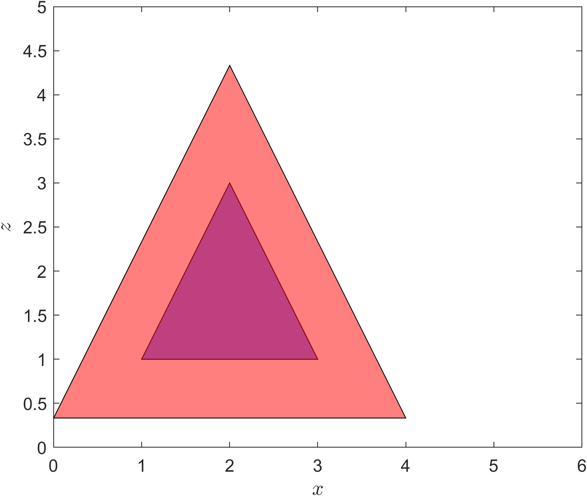

Scaling
Contents
Scaling#
Scaling is a linear transformation that moves a point closer or further away from the origin by a certain scaling vector. Consider the diagram shown in Fig. 32 where the point at position \(\mathbf{u}= (u_x, u_y, u_z)\) has been scaled by the scaling vector \(\mathbf{s} = (s_x, s_y, s_z)\).
{kind=link}

Fig. 32 Scaling of the point \(\mathbf{u} = (u_x, u_y, u_z)\) by the scaling vector \(\mathbf{s} = (s_x, s_y, s_z)\).#
The co-ordinates of the scaled point \(\mathbf{v}\) are easily calculated using
which can be written as the matrix equation
Since the translation matrix requires homogeneous co-ordinates and we would like to combine transformations we can extend the square matrix above by adding the fourth row and column of the identity matrix to give the transformation matrix for scaling.
Definition 19 (Scaling in \(\mathbb{R}^3\))
The scaling of a set of points in \(\mathbb{R}^3\) expressed using homogeneous co-ordinates by the scaling vector \(\mathbf{s} = (s_x, s_y, s_z)\) is the linear transformation with the transformation matrix
The transformation matrix for inverse scaling is
A scaling vector \(\mathbf{s} = (1, 1, 1)\) will result in \(S=I\) and the position of any point that is scaled will be unchanged.
Example 24
A polygon is defined by three points with position vectors \(\mathbf{p}_1 = (1, 0, 1)\), \(\mathbf{p}_2 = (3, 0, 1)\) and \(\mathbf{p}_3 = (2, 0, 3)\). The polygon is scaled by a the scaling vector \(\mathbf{s} = (3, 1, 2)\). Calculate the positions of the three points after the scaling has been applied.
Solution
The homogeneous co-ordinate matrix is
and the scaling matrix is
Applying the transformation
So the vertex co-ordinates of the transformed polygon are \((3, 0, 2)\), \((9, 0, 2)\) and \((6, 0, 6)\). The original triangle and the translated triangle are plotted below look along the \(y\)-axis.
{kind=link}

Scaling about the centre of a shape#
We have seen in Example 24 that scaling the polygon resulted in the centre of the polygon shifting position and the aspect ratio of the polygon changed.. This was because scaling was applied to a shape whose centre was not at the origin. To preserve the position of the centre of a shape when scaling we first need to translate the points that define the shape to the origin, which means that the translation vector if \(-\mathbf{c}\) where \(\mathbf{c}\) is the centre of the shape. Then we can perform the scaling before using the inverse translation so that the centre of the shape is back at \(\mathbf{c}\) (Fig. 33).

Fig. 33 Steps required to rotate a polygon by its centre.#
So we have the following composite transformation matrix
Example 25
Scale the polygon from Example 24 by a factor of 2 in all three directions.
Solution
The homogeneous co-ordinate matrix is
and since the polygon is a triangle the co-ordinates of the centre are the average of the vertices
The individual transformation matrices are
which are multiplied to give the composite transformation matrix
Applying the composite transformation
So the vertex co-ordinates of the translated polygon are \((0, 0, 1/3) \approx (0, 0, 0.33)\), \((4, 0, 1/3) \approx (4, 0, 0.33)\) and \((2, 0, 13/3) \approx (2, 0, 4.33)\). The original polygon and the translated polygon are plotted below looking along the \(y\) axis.
{kind=link}
